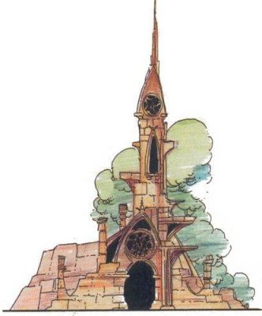

Les quatre temples
Bien que devenue très forte économiquement, Laelith est et reste avant tout une ville religieuse. Pour preuves, le titre de son souverain et le rôle des grands prêtres au conseil. Laelith porte en effet la religion dans ses veines, et il ne faut pas oublier que la cité a été rebâtie après le châtiment dans l'unique but de prouver au monde que toutes les religions peuvent cohabiter en paix. Pour cela, l'idée principale fut de rassembler tous les croyants au sein d'une structure neutre et fédératrice, afin d'oublier pour un temps les croyances partisanes. Ce dénominateur commun créé est le culte des éléments, l'élémentisme, et le Roi-Dieu incarne le guide suprême de ce mouvement. Cette philosophie part du principe que tout un chacun, quelles que soient sa race, sa nation et ses croyances, peut s'identifier à un des quatre éléments basiques de l'univers que sont le feu, l'eau, l'air et la terre. La cité a donc bâti à cet effet quatre grands temples, chacun dédié à l'un de ces quatre éléments, afin de permettre à tous les clercs de tous les cultes existants de se rencontrer, parler, confronter leurs idées, s'expliquer, et cela en des lieux privilégiés où ils se sentiront en phase avec leur religion, tout en caressant l'espoir de faire enfin régner l'harmonie entre les croyances.
Résultat de tout ceci, après de siècles d'existence, Laelith possède aujourd'hui une atmosphère unique, mélange de lieu saint et de mysticisme, qui attire chaque année un nombre impressionnant de fidèles, car « le seul fait d'apercevoir les murs de la cité bouleverse l'âme » dit-on, et la ville est rapidement devenue un lieu de pèlerinage mondialement reconnu. Quel que soit le ou les dieux que l'on vénère, en nul autre endroit l'homme n'aura la sensation d'être aussi proche d'eux.
L'affiliation
LES TEMPLES, LIEUX DE PRIÈRE
Les temples servent exclusivement de lieux saints et de prières. Les prêtres travaillant à la gestion de la cité, en fonction de la responsabilité du temple dont ils dépendent, travaillent pour la plupart à la Haute Terrasse, dans des annexes du palais-royal, ou bien dans les édifices dédiés (tribunaux, universités, bibliothèques, bâtiments militaires).
Mais malgré tous ses efforts pour rassembler les cultes, Laelith s'est dans le passé maintes fois heurtée aux extrémistes religieux de tous bords. Afin de pallier à cela, les autorités ont donc mis en place deux mesures.
La première consiste à diffuser annuellement une liste des cultes autorisés, ceci principalement afin d'empêcher la prolifération des sectes. Toute personne surprise en train de prôner la foi d'un dieu non présent sur cette liste peut être accusé d'hérésie, avec au final la condamnation à mort dans certains cas. On ne plaisante pas avec la religion à Laelith.
La deuxième mesure a pour but de regrouper les clercs par « affinités », afin d'éviter de trop brutaux conflits théologiques. C'est l'affiliation. Lorsqu'ils pénètrent en ville, les clercs ou serviteurs de quelque dieu que ce soit se voient notifier leur obligation de s'affilier à un temple dans les quatre jours qui suivent. À cette fin, on leur remet un coupon d'entrée spécial attestant de leur statut privilégié d'homme de dieux, ce qui leur ouvrira certainement quelques portes durant leur séjour, mais servira surtout à la garde de la cité afin de pouvoir contrôler s'ils ont effectué leur devoir en temps voulu. L'affiliation est libre, c'est-à-dire que les clercs sont libres de s'affilier au temple de leur choix. Toutefois il est fortement recommandé de s'affilier au temple dont l'élément correspond le mieux à l'état d'esprit du dieu vénéré. C'est là qu'un clerc aura le plus de chance de rencontrer des frères de son culte, et là encore qu'il aura la plus faible probabilité d'entrer en conflit avec d'autres clercs.
Une fois le temple choisi, la procédure est simple et consiste seulement à signer un registre. Y inscrire où on loge est facultatif. En échange, le temple appose son cachet sur le coupon d'entrée, preuve officielle de l'affiliation, et remet au clerc un petit symbole afin d'être rapidement reconnu par la suite. Le symbole est différent pour chaque temple (voir la description individuelle de chaque temple). La seule obligation pour le clerc à partir de ce moment là et de respecter son choix en fréquentant exclusivement ce temple pour ses prières, et en évitant de débattre de théologie hors de ses murs, sauf cas spéciaux comme les matinées du théâtre par exemple.
Le temple du Nuage
Le temple du Nuage est dédié aux cultes de l'air et au mysticisme le plus éthéré. Tous les cultes basés sur la nature, la liberté, la connaissance, la science, la neutralité, s'y retrouvent. Surmonté de nombreuses plates-formes à ciel ouvert où les croyants viennent méditer sans souffrir d'un quelconque confinement, le temple du Nuage avec ses 300 mètres de haut [hauteur de la tour eiffel !] est assurément le plus impressionnant des quatre temples. Personne n'habite dans le temple, tous les clercs logent dans des appartements privés autour, sur la terrasse du Nuage.
La tour mesure aux alentours de 30 mètres de haut normalement. Mais un ingénieux système basé sur la détection du soleil fait que, quand les brumes envahissent le quartier, phénomène fréquent, la tour s'allonge lentement, multipliant jusqu'à 10 fois sa hauteur naturelle, dans un grondement sourd d'engrenages mécaniques en mouvement qui s'entend partout sur la terrasse. Chaque plate-forme est architecturalement construite sur le même modèle, un espace de plein air et un dôme de cristal recouvrant un petit temple où se réfugier en cas d'intempérie, mais chacune d'elle est aménagée sur un thème différent. Le niveau de la plate-forme que fréquente un clerc témoigne de sa position au sein de son culte et de son degré d'élévation spirituelle. Il arrive parfois que des prêtres tombent ou se jettent d'une plate-forme. Dans les deux cas, les autorités du temple parlent de « suicides rituels ».
À l'arrière du temple se trouve un bâtiment rectangulaire sans étage et aux multiples fenêtres abritant de nombreuses petites chapelles pour les clercs qui ne souhaitent pas s'aventurer dans la tour principale pour une raison ou une autre. On accède à cette partie nommée le temple Bas en empruntant un tout petit escalier. Le rez-de-chaussée de la grande tour circulaire s'appelle le Circuum. Chaque jour le grand prêtre Mitrias trouve un moment pour venir y méditer avec ses fidèles. De là on a accès à quatre escaliers en colimaçon qui grimpent aux différents étages (quand la tour est en position basse, les escaliers s'enfoncent sous terre, vers nulle part). Cette salle communique avec le temple Bas également.
La plate-forme des Arbres, la première et la plus grande, est dédié aux vents.
La plate-forme des Brumes a pour thème le brouillard, le mystère et l'invisible.
La plate-forme des Pluies, toujours humide, est l'endroit où l'on vénère et étudie la pluie, la neige et le gel.
La plate-forme des Vents n'est pas fixe et s'oriente en fonction des vents, auxquels elle est consacrée, tout comme aux tornades et auc cyclones.
La plate-forme des Cieux Infinis, la dernière et la plus haute, a pour thème l'astre du jour et les étoiles. On y trouve de nombreux petits observatoires astrologiques.
Au sommet du temple se dresse le Céleste vitrail, qui permet de diffuser la lumière dans toute la tour, jusqu'au Circuum tout en bas. C'est là que semble installé le capteur qui commande l'élévation de l'ensemble, le vitrail étant toujours positionné au-dessus des brumes afin de pouvoir capter le soleil illuminateur. Et d'après les dires, le paratonnerre, installé tout au sommet et sur lequel frappent de nombreux éclairs, sert à emmagasiner l'énergie utile à l'activation d'énormes engrenages. Le symbole remis aux clercs affiliés à ce temple est une écharpe remontée d'une plume d'aigle.
Rituel d'entrée. Respirer à l'entrée du temple un mélange de vapeurs camphrées et poivrées. Il est recommandé de ne pas éternuer.
Neutralité
Le temple du Nuage maintient une position de neutralité sur la plupart de sujets qui divisent la cité. Le grand prêtre justifie cela en raison de la responsabilité historique qu'a le Nuage dans le domaine de la justice à Laelith. Les clercs du Nuage sont priés, dans leur vie hors du temple, de respecter cette doctrine et de ne pas se mêler aux manifestations et aux discours politiques. Ceci vaut d'ailleurs aux adeptes de ce temple une réputation d'hommes mous, sans avis ni personnalité.
Le temple de l'Oiseau de feu
Le temple de l'Oiseau de feu, unique temple de la terrasse de la Main qui travaille, est voué au feu et sert de lieu de communion à tous les cultes fondés sur des concepts apparentés à la force physique, la guerre, le combat, le courage et la franchise. Traditionnellement, les clercs y travaillant logent dans le quartier de la corne, à l'ouest du temple, alors que le grand prêtre, Anemates, loge lui dans la tour de la Brûlante Foi, la plus haute de l'édifice. Construit en briques rouges écarlates, l'Oiseau de feu est le plus grand des quatre temples de la cité au niveau taille. À l'intérieur y brûlent en permanence d'innombrables brasiers.
Le rez-de-chaussée s'apparente à un immense dédale car il est découpé en de nombreuses salles, loges privées et autres petites chapelles, où chaque culte peut s'installer et prêcher pour sa foi, plus ou moins tranquillement. Plus ou moins, car il y règne toujours, de jour comme de nuit, une grande animation. L'Oiseau de feu se vante d'ailleurs d'être le temple le plus fréquenté de la ville. Au fond se trouve le Brasier éternel, à plus de 12 mètres au dessous du niveau du sol, un immense feu qu'alimentent en permanence les clercs du temple et qui rayonne jusqu'à la Tête de l'Oiseau, sous lequel il est situé. Ce feu est censé rappeler aux fidèles que le feu est dispensateur de chaleur et de lumière. Une sorte de chemin de ronde permet aux religieux de s'amasser tout autour du Brasier lors du discours hebdomadaire que donne le grand prêtre depuis la Tête de l'Oiseau.
LES MISSIONNAIRES ROUGES
L'ordre des missionnaires rouges est en pleine expansion, et cela commence à faire frémir même les autorités de Laelith. Le grand prêtre de l'Oiseau de feu en personne n'aurait plus beaucoup de contrôle sur cet ordre. De plus en plus nombreux sont ceux qui craignent une radicalisation de la religion dans la cité et l'institution d'une sorte de « chasse aux athées » plus terrible encore que l'inquisition.
Au premier étage se trouve le Grand chœur, salle gigantesque décorée de somptueux et impressionnants vitraux couleur rouge-orangé. C'est là qu'ont lieu les plus importantes cérémonies religieuses du temple et les grands discours théologiques. Du Grand Choeur part le grand Escalier de l'Initié, large de 13 mètres, sur le cou de l'oiseau. Chaque semaine, le grand prêtre du temple le gravit afin de se rendre à la Tête de l'oiseau. De là, il prononce un grand discours pour les fidèles du temple qui sont amassés à l'étage inférieur, autour du Brasier Éternel. À noter que personne d'autre que lui n'est autorisé à franchir le Portail de l'initié. De nombreuses histoires existent qui relatent les actes d'imprudents qui se seraient risqués à le passer et qui se sont retrouvés immédiatement carbonisés, à l'état de cendre.
Du rez-de-chaussée on peut également accéder, si les gardes vous laissent passer bien sûr, à la tour de la Brûlante foi, les appartements privés du grand prêtre. C'est là que la plus haute instance du temple reçoit ses plus proches collaborateurs et dispense son enseignement. Au sommet de cette tour se dresse sa chapelle privée.
Le temple de l'Oiseau de feu est en charge d'administrer tout ce qui touche à la sécurité de la ville, la garde et l'armée. Il est également à l'origine de l'ordre des missionnaires rouges, à la réputation contrastée, évangélisateurs fanatiques pour les uns, vrais croyants pour les autres. Le symbole remis aux clercs affiliés à ce temple est un petit morceau de bois sculpté en forme de flamme.
Rituel d'entrée. Tenir des deux mains un cierge allumé. Le temps de combustion indique combien de temps l'on peut rester dans le temple.
Le temple du Poisson d'argent
Situé sur la Chaussée du lac, le temple du Poisson d'argent est consacré à l'eau et aux principes de régénération qui lui sont associés. En premier lieu s'y retrouvent les adorateurs des océans et des cours d'eau, ainsi que les partisans de la pluie, mais également et de manière plus générale les cultes basés sur des concepts proches de la vie, la générosité, la beauté et l'art. Avec ses grandes parures en argent et ses nombreux cristaux, ce temple est considéré par la grande majorité comme le plus beau des quatre de la cité.
Les somptueux jardins qui le jouxtent, ainsi que les nombreuses dépendances qui donnent dessus, appartiennent au temple. Le grand prêtre Xeniphys loge d'ailleurs dans l'une d'elles, de même que les haut dignitaires du Poisson d'argent. Ces jardins abritent d'innombrables espèces végétales, plusieurs bassins où nagent de nombreuses variétés de poissons, et même un petit zoo hébergeant des animaux rares. Ceci afin de refléter le fait que le temple est lié à la vie sous toutes ses formes.
À l'intérieur du temple l'eau est partout présente, grâce à d'ingénieux systèmes de pompes reliés à l'Inlam, d'où est tiré l'eau. Le visiteur désireux d'entrer dans le temple empruntera l'un des deux escaliers en bordure du temple, alors que l'escalier central passant sous l'arche des Dauphins, qui doit son nom aux deux énormes statues de bronze argenté dressées de par et d'autre de l'escalier et qui représentent cet animal, est réservé aux prêtres de haut rang. Ensuite on accède au premier des trois grands bassins du Poisson d'argent, le bassin Primordial, qui symbolise le fait que toute vie sur terre vient de l'eau. C'est le plus large mais également le moins profond des bassins. Puis vient le bassin Élémentaire, profond et aux eaux sombres, qui rappelle qu'il faut toujours aller au fond des choses pour découvrir la vérité. De nombreux clercs n'hésitent pas à fréquemment plonger dans ce bassin en quête de vérité, et le temple déplore d'ailleurs de nombreuses noyades car tous ne savent pas nager. Enfin le dernier bassin, le bassin Initial, circulaire et recouvert par un énorme dôme en quartz, est censé prouver aux clercs que « l'Eau est tout et dans tout ». C'est là qu'on lieu les principales offices. Au fur et à mesure de leur initiation, les affiliés au temple du Poisson d'argent sont invités à se baigner successivement dans chacun des 3 bassins.
L'ORDRE DE SARIS
Une des dépendances du temple du Poisson d'argent héberge le siège de l'ordre de Saris, un ordre de paladins, et son grand maître.
Le temple Humide est considéré comme le saint des saints du bâtiment. Chaque fin de semaine le grand prêtre du temple y réunit ses plus proches et fidèles collaborateurs pour y célébrer une grand cérémonie religieuse. On y accède par quatre escaliers en colimaçon qui descendent du bassin situé à l'étage supérieur. Le puits du croyant, situé au cœur du temple, est une grande tour à l'intérieur de laquelle flotte une statue de platine représentant un énorme poisson, symbole du temple. La statue repose au fond du puits, à l'abri des regards, mais lorsqu'il pleut un ingénieux système fait monter le niveau de l'eau dans le puits, avec pour conséquence d'élever la statue jusqu'au sommet afin qu'elle devienne alors visible par tous, même à l'extérieur du temple, car tout en haut les parois sont des vitraux de quartz transparents.
Les dépendances du temple abritent la représentation laelithienne d'un ordre de paladin, le Gant de Saris, ainsi que le siège des missionnaires de la paix, ordre crée par le temple. À noter également que les utruz, pour d'obscures raisons, ne sont pas admis à l'intérieur du temple. Le symbole remis aux clercs affiliés à ce temple est un pendentif en forme de dauphin.
Rituel d'entrée. Passer pieds nus dans l'eau purifiée du bassin à l'entrée du temple.
Le temple du Crâne
Le temple du Crâne, sur la Chaussée du lac, accueille les adorateurs de la terre mais également ceux du Matériel (par opposition au Spirituel), du secret et de l'occulte. C'est assurément d'apparence le plus petit, le moins joli, et le plus mystérieux des quatre temples de la cité. Il doit son nom à l'énorme crâne de plus de 2 mètres de large découvert lors du creusement des fondations du temple. Le temple est entièrement construit en briques de terre cuite, jamais entretenues, ce qui explique son aspect de ruines. Ses milliers de petites statues ressemblants à des gargouilles, sculptées sur les murs, et les ossements qui sortent, ne le rendent que plus morbide.
Les jardins à l'arrière du bâtiment font parties intégrante du Crâne. Les clercs y cultivent de nombreuses plantes et légumes, et y font pousser des arbres. Les plantes serviraient de drogues, et les arbres à confectionner des cercueils, d'après les rumeurs.
À l'entrée du temple sont postés en permanence des gardes, le crâne rasé, le teint mat, et portant des colliers d'ossements. La fréquentation du temple laissant parfois à désirer, ceux-ci maintiennent un semblant de contrôle. La première salle dans laquelle on pénètre est le Patio. Les cultes les plus modérés y installent ici leur autels, afin d'éviter les amalgames avec le reste du temple. La réputation du temple n'est en effet pas des meilleures.

On entre ensuite dans la grande salle du temple, les Espoirs perdus. Cette immense pièce est en général remplie de fidèles de tous genres se lamentant et c'est là qu'on lieu les principaux offices religieux. À savoir que le grand prêtre Valdenath, à la différence de ses confrères, n'officie aucune cérémonie personnellement. Il ne vit pas non plus dans son temple. Dans le renfoncement au fond à gauche de la salle des espoirs perdus se trouvent les Arcades du jugement, entièrement constituées d'ossements. Des gardes musclés y contrôlent le passage à la salle des fouilles où, comme son nom l'indique, les clercs désireux de ce rendre sous le temple sont méticuleusement fouillés. Il y aurait eu dans le passé plusieurs problèmes, notamment des attentats, qui ont conduit le temple à mettre en place cette mesure. Ensuite on descend un escalier et on pénètre au saint des saints. Le Crâne s'y trouverait, mais ne s'aventure pas sous le temple qui veut...
Le temple du Crâne est à l'origine de l'ordre des missionnaires de l'ombres, ordre mystérieux, comme l'ensemble du temple, constitué de clercs auxquels la cité ferait appel pour des missions... spéciales. L'activité des clercs du temple du Crâne est également un peu plus obscure que celles des autres temples de Laelith. En tant que responsable de la police secrète, Valdenath contrôlerait énormément de choses dans la ville, avec ou sans l'aval du Roi-Dieu. Et quelques salles de la Taupe serviraient de salles d'interrogatoires aux pratiques musclées. Le symbole remis aux clercs affiliés à ce temple est un bracelet d'ossements.
Rituel d'entrée. S'enduire les tempes et le front d'une poussière d'os provenant d'un récipient en forme de crane creusé dans un pilier à l'entrée.
Le temple de la Taupe
Mais le temple du Crâne est un peu plus complexe qu'il ne le parait. Si, vu de l'extérieur, celui-ci est de loin le plus petit de la cité, en réalité le temple du Crâne n'est que la partie immergée de l'iceberg. Sous l'édifice se trouve un autre temple, celui de la Taupe. Composée d'un immense réseau de galeries souterraines, la Taupe accueille nombres de clercs et de pratiques que Laelith ne pourrait accepter. Les adorateurs du Mal s'y retrouvent et la pratique de sacrifices d'animaux (et d'humains ?) y est courante. Le temple de la Taupe est également la principale connexion connue avec le Cloaque.